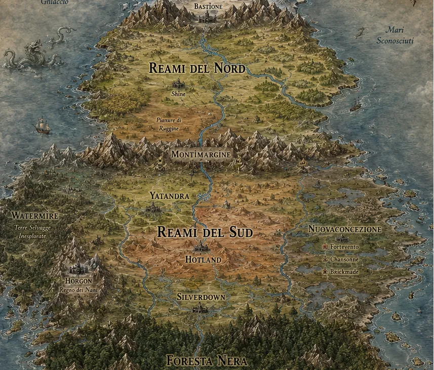
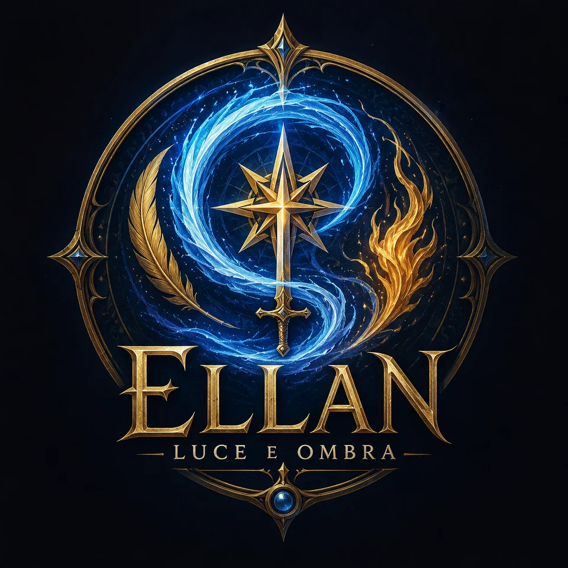
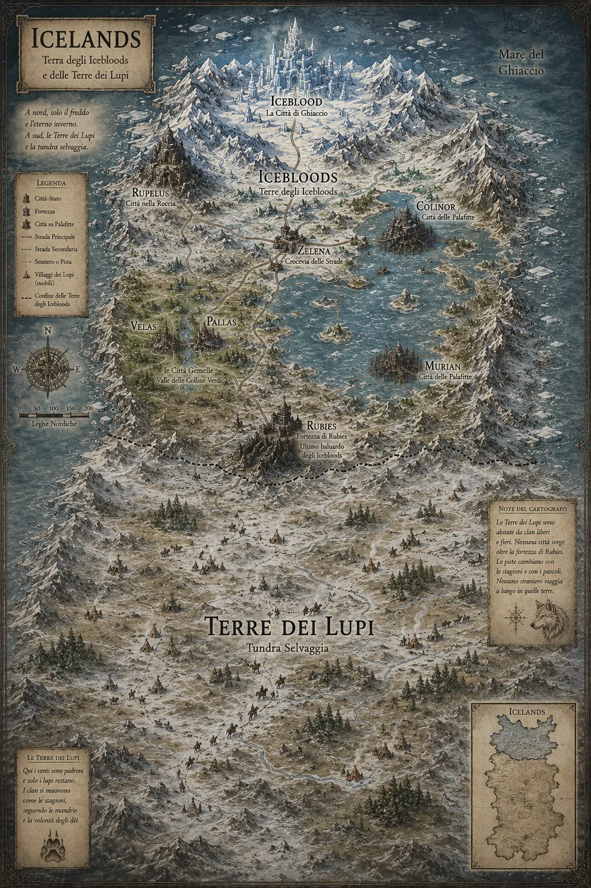
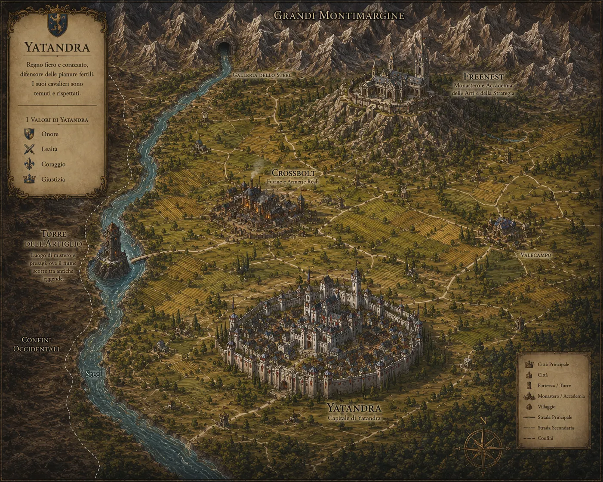
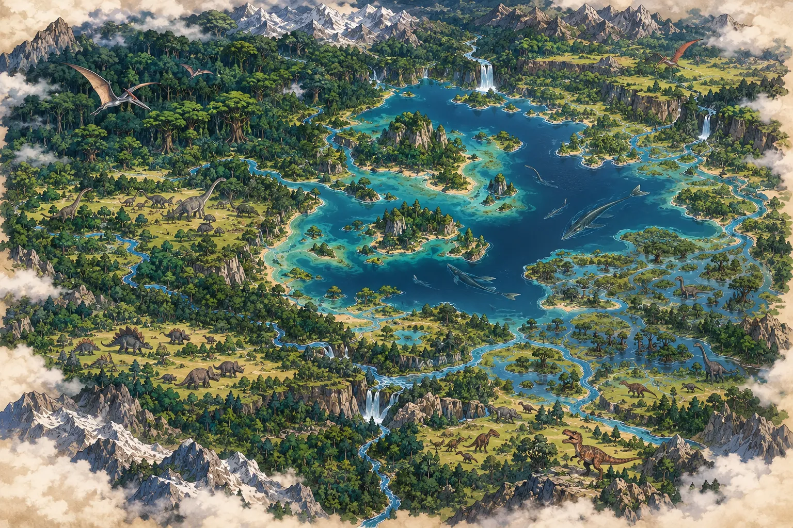
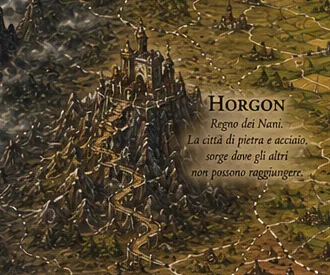
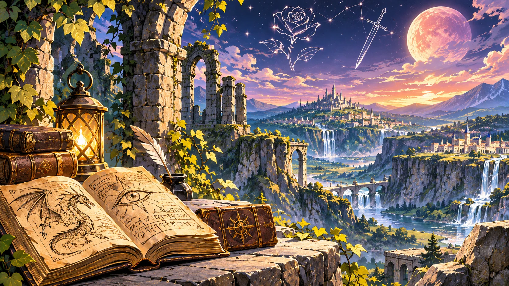

I Reami
Il quadro generale dei Reami di Heimland.

Un nuovo modo di esplorare Ellan sta prendendo forma.
Consulta la precedente versione di Ellan · Pagina storica, prossima all’archiviazione.
Ellan – Luce e Ombra è un'ambientazione fantasy originale per giochi di ruolo: un mondo in cui il Mana respira sotto la terra, antiche civiltà hanno lasciato tracce del proprio passaggio e molte verità sulla storia dei Reami sono state dimenticate.
Ellan nasce per raccontare storie di eroi imperfetti, magia viva, divinità ambigue, scelte difficili e popoli diversi. Dai regni del Sud alle terre gelide del Nord, ogni luogo custodisce tradizioni, conflitti, leggende e misteri da scoprire.
È un mondo pensato per campagne di gioco di ruolo, ma non è legato a un solo regolamento: puoi esplorarlo usando i manuali di Ellan o adattando l'ambientazione al sistema che preferisci. Le sue cronache, i personaggi, i miti e le canzoni possono essere letti e ascoltati anche senza giocare.
Tutto gratuito, fatto per passione. Come ogni progetto della Compagnia della Fenice, Ellan nasce dal desiderio di condividere avventure e lasciare alla fantasia la libertà di volare.
Il nuovo portale ti permette di consultare l’ambientazione direttamente online, pagina dopo pagina, e di scaricare anche soltanto le parti che ti interessano: un regno, una creatura, un personaggio o una storia, senza dover prendere tutto il resto. Il limite è la fantasia.
Una guida introduttiva con le regole essenziali, una panoramica del mondo e un'avventura per iniziare a giocare.
Esplora il continente di Heimland e le sue regioni. Le carte sono disponibili in WebP e puoi aprirle a grandezza originale.
Come leggere le mappe: queste carte non sono rappresentazioni geografiche esatte. Riflettono piuttosto una geografia percepita, costruita sulle conoscenze, sui racconti e sui punti di vista degli abitanti di Ellan. Distanze, proporzioni, posizioni e confini possono quindi essere approssimativi: usale per orientarti nel mondo e comprenderne i territori, non per misurazioni precise.

Apri la carta in grande o scegli un territorio qui sotto per raggiungere direttamente il suo Gazzettino. Le aree sensibili sulla mappa saranno aggiunte dopo la verifica precisa dei confini, evitando collegamenti errati.

Il quadro generale dei Reami di Heimland.

Le distese settentrionali e i territori vicini a Iceblood.

Il territorio di Yatandra e le sue città.

Territori selvaggi e grandi predatori.

Il regno nanico e le vie del territorio.
Esplora i regni e i territori del mondo conosciuto.
Ogni Stato custodisce le proprie tradizioni, ma i Noren condividono una lingua comune e un sistema monetario riconosciuto fra i regni. Anche a Horgon, dove vivono numerosi umani, queste consuetudini facilitano scambi e viaggi.
Lingua comune: tutti i Noren parlano la stessa lingua. La pronuncia varia da uno Stato all’altro: gli accenti possono suggerire la provenienza di chi parla, senza impedire la comprensione reciproca. Altre stirpi, come Nani, Feris ed Elfi, conservano lingue proprie, descritte nei rispettivi gazzettini.
Monete: oro, argento e rame. 1 moneta d’oro = 10 monete d’argento = 100 monete di rame. Le monete possono avere effigi diverse secondo lo Stato che le conia, ma quantità di metallo e valore sono uguali per ciascun taglio, indipendentemente dalla provenienza.
Calendario: l’anno conta 300 giorni, suddivisi in 10 mesi di 30 giorni. Il ciclo dei mesi è condiviso, mentre gli Stati possono contare gli anni a partire da eventi storici differenti.
Consulta i dieci mesi di Ellan · Scopri le cronologie dei regni
Leggi il Gazzettino di Yatandra 1.0
Leggi il Gazzettino di Silverdown 1.1
Leggi il Gazzettino di Hotland
Leggi il Gazzettino di Nuovaconcezione 1.1
Leggi il Gazzettino di Shine 1.0
Leggi il Gazzettino di Lonely 1.0
Leggi il Gazzettino di Starlight
Leggi il Gazzettino delle Terre dei Lupi 1.0
Leggi il Gazzettino di Iceblood 1.0
Leggi il Gazzettino delle Terre dell'Ovest 1.0
Le storie dei protagonisti di Ellan, le loro imprese e i legami che uniscono i Reami. Elenco in ordine alfabetico per nome; le schede non ancora disponibili sono indicate come in preparazione. Il simbolo † indica un personaggio deceduto; ◇ segnala una figura storica la cui sorte resta incerta.
Legenda dei personaggi — il colore indica il tipo di scheda; il simbolo † segnala inoltre i deceduti.
Aelrik Varnen — Il Maestro delle Parole · Gazzettino 1.0
Aelissa Accese — La Custode dei Racconti · Gazzettino 1.0
Agilulfo Boccadoro † — La Voce degli Eroi · Gazzettino 1.0
Asgheyroth — Il Custode del Silenzio · Gazzettino 1.0
Aurora — La Ragazza Senza Passato · Gazzettino 1.0
Berto e Manola — Le Ombre della Regina · Gazzettino 1.0
Cassandra — L’Occhio dei Fulmini · Gazzettino 1.0
Colpo Veloce — Il Sorriso degli Irregolari · Gazzettino 1.0
La Combattente Danzante — Il Passo della Speranza · Gazzettino 1.0
Cooky Edgewood — Il Kender che Salvò un Mondo (per Sbaglio) · Gazzettino 1.0
Cristal Swan Igor V — Il Re del Ghiaccio Nero · Gazzettino 1.0
Cryon Lonewolf — Il Mago che Ascoltava il Mondo · Gazzettino 1.0
Dany “Foglia Rossa” — L’Erborista dal Portafogli Veloce · Gazzettino 1.0
Dennis Ombralunare I — L’Imperatore della Luna Spezzata · Gazzettino 1.0
Elena Rubies — La Regina delle Fiamme · Gazzettino 1.0
Elyra di Ferrosangue — La Rosa d’Acciaio · Gazzettino 1.0
Eric Jun — Il Re che Non Vuole Andarsene · Gazzettino 1.0
Flick Greenstone — Il Re della Memoria · Gazzettino 1.0
Geffroi — Il Custode dei Glifi · Gazzettino 1.0
Holdrin Ombralunare — Il Re delle Stelle Silenziose · Gazzettino 1.0
Kapetan Sertisicon — La Lancia · Gazzettino 1.0
Kasumi Arada — Colei che Ha Scelto · Gazzettino 1.0
Lir-Lir-Tu — Il Primo dei Maghi · Gazzettino 1.0
Liselle Silverhawk — Il Falco d’Argento · Gazzettino 1.0
Lucifer Forter — Il Mastino di Shade · Gazzettino 1.0
Lyra dei Fulmini Capricciosi — La Tempesta che Ama Troppo · Gazzettino 1.0
Marchk Ombralunare — Il Re delle Terre Indomite · Gazzettino 1.0
Marlene Stormblade — La Regina che Cantava la Pace · Gazzettino 1.0
Menion Ravenlock — Il Mascalzone della Corona · Gazzettino 1.0
Myrana Quelien — Oltre le Apparenze · Gazzettino 1.0
Namari “Quickhand” Ravenclaw — L’Artiglio del Corvo · Gazzettino 1.0
Neven Lare — Gli Occhi sul Mondo · Gazzettino 1.0
Pardisan Stormblade — Il Re del Fulmine · Gazzettino 1.0
Percival † — Il Cavaliere della Rosa · Gazzettino 1.0
Rilven Arcochiaro — Il Dito di Rame · Gazzettino 1.0
Rinmu / Umnir — Lo Spirito Invertito · Gazzettino 1.0
Robert Tartareo — Il Comandante dei Dimenticati · Gazzettino 1.0
Ryan Stormblade — Il Principe della Tempesta · Gazzettino 1.0
Shade Hellbells — Il Pugno di Hotland · Gazzettino 1.0
Talarion Occhio d’Inverno — La Lancia e la Coscienza · Gazzettino 1.0
Tetsuya — Il Ferro che Non si Piega · Gazzettino 1.0
Tyna Silverwolf — All’Ombra dei Glifi · Gazzettino 1.0
Volpe Scura — Tra le Ombre e il Vento · Gazzettino 1.0
Zoey — La Sorella che Tutti Vorrebbero (o No?) · Gazzettino 1.0
Scopri le origini, l’aspetto, la cultura e le tradizioni dei popoli di Ellan.
I Noren — Gazzettino delle Stirpi 1.0
Gli Elfi — Gazzettino delle Stirpi 1.0
I Nani — Gazzettino delle Stirpi 1.0
Gli Weishtar — Gazzettino delle Stirpi 1.0
I Feris — Gazzettino delle Stirpi 1.0

Le storie delle origini secondo i popoli di Ellan. Ogni racconto esprime il punto di vista di chi lo tramanda: nessuno deve essere scambiato per una verità indiscutibile.
Mito Antico – Le Razze Primarie
Racconti, leggende e memorie dei Reami. Segui le imprese dei protagonisti di Ellan e scopri le storie raccolte dai cronistorici.
📖 Esplora le Cronache di Ellan
Già disponibile: L’Anello e la Lama, la storia di Ryan Stormblade e Namari Quickhand. Altri racconti sono in preparazione.
Fedi, culti e credenze del mondo conosciuto.
Alidor — La Luce e il Giudizio · Gazzettino della Religione 1.0
Wotan — Il Padre delle Armi e dei Canti · Gazzettino della Religione 1.0
Il Culto della Luna — Lucina, Lunarius e le Tre Tradizioni · Gazzettino 1.0
Il Ghiaccio del Nord — La Forza nella Prova · Gazzettino 1.0
Scopri le istituzioni, gli ordini e le scuole che custodiscono saperi e tradizioni di Ellan.
Irregolari di Fortevento — Gazzettino 1.0
Egida delle Ombre — Gazzettino 1.0
La Torre dell’Artiglio — Gazzettino 1.0
Congrega del Baccano — Gazzettino 1.0
I Cavalca Roc — I Custodi dei Cieli · Gazzettino 1.0
I Cronistorici — La Penna Imparziale · Gazzettino 1.0
Accademia dei Grifoni — Le Tre Scuole di Freenest · Gazzettino 1.0
La magia come viene studiata e percepita dagli abitanti di Ellan. Esplora il Mana, la forza che attraversa il mondo e custodisce la memoria della sua storia.
Il Mana — Il Respiro dell’Impossibile · Gazzettino 1.0
Magister e Maghi del Vecchio Stile · Gazzettino 1.0
I Warlock — I Vincolati · Gazzettino 1.0
I Bardi — L’Arte che Incanta · Gazzettino 1.0
Gli Artefici — Gli Ingegneri del Mana · Gazzettino 1.0
I Magospada — Le Lame del Mana · Gazzettino 1.0
Chierici e Paladini — La Magia della Fede · Gazzettino 1.0
Il pianeta, Scintillante, Lucina, le costellazioni, le stagioni e le creature che popolano Ellan.
Il cielo e le stagioni di Ellan — Pianeta, Lucina e calendario
Manuali, racconti, canzoni e materiali di Ellan da esplorare e scaricare.
Il modo più semplice per iniziare: regole essenziali, una prima panoramica dell'ambientazione e un'avventura introduttiva.
Canti popolari, inni e ballate raccolti da Rilven Arcochiaro. Puoi leggere il Canzoniere oppure ascoltare e scaricare le sue musiche.